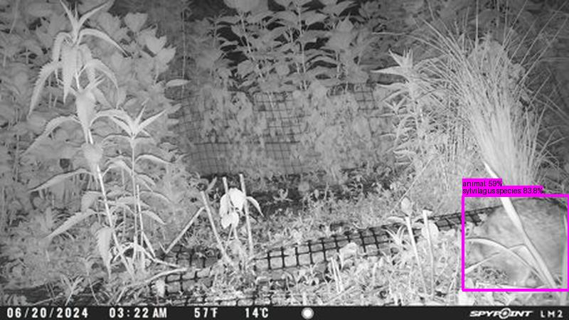
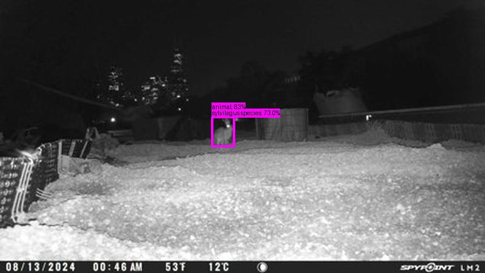
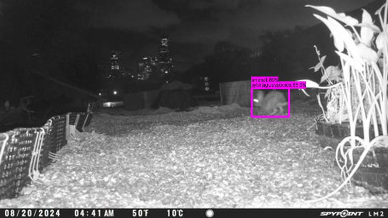

Result type: detections_animal, image: images/batch_2/2024-06-29_WM_Boardwalk_D--PICT0387.JPG, max conf: 0.586
Result type: detections_animal, image: images/batch_3/2024-08-17_UR004--PICT0206.JPG, max conf: 0.831
Result type: detections_animal, image: images/batch_3/2024-08-31_UR004--PICT0025.JPG, max conf: 0.890
